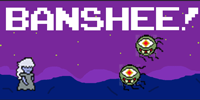
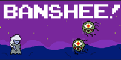

LEONARD SANTOS
Project 1: Banshee!
Origin & Description
Banshee! is a project that I recently began developing after hearing about the original origin of the titular entity. Apparently, banshees have usually been depicted as mystical, mysterious women who would appear in a situation that involved death in a way. This meant that the banshee would come forward if someone has recently died or is about to die. I decided to create a reinterpretation of this myth, in which the banshee is actually present to collect recently departed souls to give them safe passageway to the Underworld before demons are able to claim them. The famous banshee scream, which was originally cited as the wailing of a weeping woman in grief, has been altered to become a moment of power for the banshee as a way to ward off evil spirits.
Process
I started by animating all of the figures, beginning with Banshee, the demons, and the souls. I animated them by drawing several images of all the elements, and then I put them all into a for loop which created a sense of movement. I also drew the background as well, and typed in all of the game mechanics in order to make this game functional.

 
